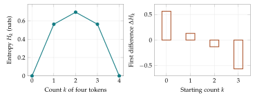

A sensor that always reports the same symbol is predictable. A sensor that reports four symbols equally often is harder to predict. Both devices have four labels available, but their probability distributions carry different amounts of uncertainty. We need a numerical function that depends on the probabilities themselves.
The function we want is called entropy. We have already seen its formula as a number assigned to a probability table. To understand that number, begin with a single observed symbol and ask how surprising it would be. We can then average that surprise over the symbols a device might report.
Why surprise is measured with a logarithm
An event of probability one is unsurprising. An event of probability \(1/2\) requires one fair binary choice to identify. An event of probability \(1/8\) is as selective as three specified fair binary choices. A useful surprise scale assigns these events values zero, one, and three.
For \(z>0\), the base-two logarithm \(\log_2 z\) is the exponent satisfying \(2^{\log_2z}=z\). Thus \[\log_2 8=3,\qquad \log_2(1/8)=-3.\] The surprisal of an event with probability \(p>0\) is \(-\log_2p\) bits. Lower probabilities give greater positive surprise.
Logarithms turn multiplication into addition: \[\log_2(ab)=\log_2a+\log_2b.\] If independent events have probabilities \(p\) and \(q\), the joint probability is \(pq\) and the joint surprisal is the sum of their surprisals. This additivity is the reason a logarithm is useful.
Natural logarithms use base \(e\). The same surprise scale in natural units, or nats, is \(-\ln p\). The conversion is \[\log_2p=\frac{\ln p}{\ln2}.\] Changing base changes units, as converting meters to feet changes the number attached to a length. It does not change which distribution has greater entropy.
Example. A message's surprise and its frequency
Suppose a device reports \(A,B,C\) with probabilities \((1/2,1/4,1/4)\). An \(A\) report has surprisal one bit; a \(B\) or \(C\) report has surprisal two bits. An unlikely report is more surprising when it occurs, but it occurs less often. Average uncertainty must account for both facts.
Entropy averages the surprise over observations
Using the expectation from Chapter 4, define Shannon entropy \[\boxed{H(p)=-\sum_i p_i\ln p_i.}\] The version in bits is \(H_2(p)=H(p)/\ln2\). In the three-symbol example, \[H_2(p)=\frac12(1)+\frac14(2)+\frac14(2)=\frac32\text{ bits}.\]
Entropy is an average under the distribution being described. It is not the surprise of every individual observation. Nor does it count how meaningful a message is to a person. It quantifies the uncertainty about which label will be observed within a specified probability model.
A zero-probability label contributes zero. It never occurs under the model, so it contributes nothing to the average. We write \(0\ln0:=0\) as a convention for the product and skip such entries in calculations.
Pure states such as \((1,0,0)\) have entropy zero. For a uniform distribution on \(k\) labels, \[H(1/k,\ldots,1/k)=-k\frac1k\ln\frac1k=\ln k.\] More equally plausible possibilities require more information to identify.
Entropy is unchanged by relabeling categories because the sum contains the same probability values. A change of labels is different from merging labels: merging may discard distinctions that were previously observable.
A helpful way to read the entropy sum is to imagine a long list of reports. A report of type \(i\) contributes surprise \(-\ln p_i\). The fraction of reports of that type is modeled by \(p_i\). Multiplying those two quantities gives its contribution to the mean. A rare outcome has high individual surprise but a small averaging weight.
For example, a binary source with probabilities \((0.99,0.01)\) has entropy about \(0.0560\) nats. Its rare outcome has surprisal \(-\ln0.01\approx4.6052\) nats. Those statements are compatible: most reports are easy to predict, while a small fraction are surprising. Confusing individual surprise with average entropy would reverse the interpretation of many information calculations.
One can express entropy as an effective number of equally likely outcomes: \[N_{\mathrm{eff}}=e^{H(p)}.\] A uniform distribution on \(k\) labels has \(N_{\mathrm{eff}}=k\). For \((1/2,1/4,1/4)\), the effective count is \(2^{3/2}\approx2.828\), between two and three. This need not be an integer because it matches an uncertainty level, rather than counting labels literally. The number is sometimes called perplexity in prediction settings.
Why balanced distributions have the largest entropy
Nonnegativity follows immediately: \(-\ln p_i\geq0\) when \(0<p_i\leq1\). An upper bound follows from the weighted arithmetic-geometric mean inequality introduced in Chapter 3.
First suppose all \(k\) probabilities are positive. Apply the inequality to numbers \(1/p_i\) with weights \(p_i\): \[\prod_i(1/p_i)^{p_i}\leq\sum_i p_i(1/p_i)=k.\] Taking logarithms gives \[\boxed{0\leq H(p)\leq\ln k.}\] Equality at the upper bound requires the numbers \(1/p_i\) to be equal, hence every probability to be \(1/k\).
If only \(s\) entries are positive, apply the same argument to those entries to obtain \(H(p)\leq\ln s\leq\ln k\). The set of positive-probability labels is the support. Removing available outcomes can lower the largest uncertainty attainable.
For four labels, compare \((1,0,0,0)\), \((1/2,1/4,1/4,0)\), and \((1/4,1/4,1/4,1/4)\). Their entropies in bits are zero, \(3/2\), and two. The bound is attained only by the last distribution.
An entropy table turns the field into a sequence
A whole triangle of probability tables is hard to take in at once. Start with four tokens and two categories. There are only five compositions, so we can put their entropy values in order and compare neighboring entries.
Restrict to a binary lattice with four tokens. Let \(k\) be the number assigned to \(A\), and define \[H_k=H(k/4,1-k/4),\qquad k=0,1,2,3,4.\] The result is a five-term sequence indexed by composition.
| \(k\) | Probability of \(A\) | \(H_k\) in nats | Forward difference |
|---|---|---|---|
| 0 | 0 | 0 | \(0.562335\) |
| 1 | \(1/4\) | \(0.562335\) | \(0.130812\) |
| 2 | \(1/2\) | \(0.693147\) | \(-0.130812\) |
| 3 | \(3/4\) | \(0.562335\) | \(-0.562335\) |
| 4 | 1 | 0 |
For example, \[H_1=-\frac14\ln\frac14-\frac34\ln\frac34\approx0.562335.\] The first difference is \(\Delta H_k=H_{k+1}-H_k\). Its sign changes from positive to negative as the count passes through the balanced state. This identifies the maximum from a finite table.
Two different indices will appear in this chapter. The index \(k\) describes position on a lattice. The index \(n\) will describe time along an update trajectory. A spatial difference \(H_{k+1}-H_k\) and a time difference \(H(p_{n+1})-H(p_n)\) use the same subtraction operation, but compare different pairs of states.

Concavity means diminishing gains in one direction
The first differences in the table decrease as \(k\) increases. Taking their differences gives \[\Delta^2H_k=H_{k+2}-2H_{k+1}+H_k.\] For the four-token table, these are approximately \[-0.431523,\quad-0.261624,\quad-0.431523.\] All are negative. Adding successive tokens to \(A\) brings smaller gains, then losses, as the distribution becomes more concentrated in \(A\).
A function on the simplex is concave when \[H((1-t)p+tr)\geq(1-t)H(p)+tH(r), \qquad 0\leq t\leq1.\] The left side describes pooling the distributions and forgetting which source an observation came from. The right side averages the uncertainty when that source is retained.
For a binary sequence sampled at equal probability intervals, apply concavity to the midpoint: \[H_{k+1}\geq\frac12(H_k+H_{k+2}).\] Rearranging gives \(\Delta^2H_k\leq0\). This connects the geometric statement about mixtures with the discrete second difference.
Here is a finite proof of concavity. It is useful to follow the meaning of the quantities before the algebra. Fix one coordinate, let its two probabilities be \(a,b\), and let \(m=(1-t)a+tb>0\). Define weights \[\alpha=\frac{(1-t)a}{m},\qquad \beta=\frac{tb}{m}.\] They are nonnegative and add to one. Weighted arithmetic-geometric mean applied to \(m/a\) and \(m/b\) gives \[\alpha\ln(m/a)+\beta\ln(m/b)\leq0.\] Indeed, their weighted arithmetic mean is one. Multiplying by \(m\) and rearranging yields \[m\ln m\leq(1-t)a\ln a+tb\ln b.\] If one entry is zero, omit its zero-weight term; the corresponding arithmetic mean is at most one, giving the same inequality. If \(m=0\), every contribution is zero.
Now apply this coordinate inequality to every pair \(p_i,r_i\), add, and multiply by minus one. The result is the stated entropy inequality. No derivative has been used.
The averaging parameter in concavity deserves a concrete interpretation. Suppose source \(P\) is selected with probability \(1-t\) and source \(R\) with probability \(t\). Conditional on the selected source, draw a label using its table. If the source name is hidden, the label has distribution \(m=(1-t)p+tr\).
Knowing the source makes prediction easier on average. For two certain but different sources, \(p=(1,0)\) and \(r=(0,1)\), the conditional uncertainty is zero. Hiding an equally likely source name produces \(m=(1/2,1/2)\) with entropy \(\ln2\). The uncertainty has come entirely from not knowing which source was used.
Concavity does not say a mixture’s entropy is at least the entropy of each input. Mixing a fair binary source with a certain source can lower the fair source’s entropy while remaining above the weighted average of the two entropies. The two sides of the concavity inequality should be compared exactly as written.
For a denominator-\(N\) lattice, raw directional changes usually become smaller as the step \(1/N\) shrinks. Comparing slopes across resolutions therefore requires deciding whether to use \(\Delta H\) or the quotient \(N\Delta H\). A smaller one-token entropy change on a finer lattice does not by itself show that the underlying function has become flatter. It may simply mean the token represents less probability.
A rule that balances tokens raises entropy
Consider a lattice update that moves to a neighbor with strictly greater entropy whenever one exists, and stays put otherwise. On the binary four-token lattice, starting from \(k=0\) gives \[0\to1\to2\to2\to\cdots.\] The corresponding entropy sequence is \[0,\quad0.562335,\quad0.693147,\quad0.693147,\ldots.\] Its time differences are nonnegative. The rule was constructed to have that property.
For several categories, a transfer from a count \(a\) to a count \(b\) raises entropy whenever \(a\geq b+2\). To see why, write \[h(j)=-\frac jN\ln\frac jN.\] The entropy contribution of the two categories changes by \[[h(a-1)-h(a)]+[h(b+1)-h(b)].\] The increments \(h(j+1)-h(j)\) decrease with \(j\), by the concavity just proved. The gain at the smaller count exceeds the loss at the larger one. When \(a=b+1\), the transfer only swaps the counts and leaves entropy unchanged.
Thus entropy is maximized on the token lattice when counts differ by at most one. If \(N\) is divisible by the number of categories, exact uniformity is available. Otherwise the most balanced integer counts replace the continuous uniform point. A lattice constraint changes which maximum can actually be reached.
Example. The most balanced four-token state
With three categories and four tokens, exact uniformity would require \(4/3\) tokens in each category. The maximizing count states are the three permutations of \((2,1,1)\). Moving toward \((3,1,0)\) concentrates the counts and lowers entropy. Moving between two permutations of \((2,1,1)\) leaves entropy unchanged.
Entropy change is a property of the dynamics
An entropy-increasing rule is one possible update. The growth rule from Chapter 1 can do something else. Starting at \((1/2,1/2)\) and giving \(A\) multiplier two and \(B\) multiplier one produces \((2/3,1/3)\). Its entropy is about \(0.6365\) nats, less than the starting value \(\ln2\approx0.6931\).
The normalized growth rule favors one type; the balancing rule favors uncertainty. A probability vector alone imposes neither direction of change. We need to state both the function being measured and the recurrence being used.
For any trajectory, telescoping gives the exact information balance \[\boxed{\sum_{n=0}^{T-1}[H(p_{n+1})-H(p_n)] =H(p_T)-H(p_0).}\] Positive and negative steps can cancel. An endpoint entropy change does not reveal every intermediate change.
For an entropy-increasing process, each step contributes a nonnegative change. Add those changes and the intermediate entropy values cancel, leaving the total gain. This is a useful way to distinguish a property of a particular update rule from a property of entropy itself.
Prefix codes connect uncertainty to messages
Suppose symbols are transmitted as bit strings. A prefix code has the property that no codeword begins another codeword. This allows the receiver to identify where each symbol ends.
For probabilities \((1/2,1/4,1/4)\), assign \[A\mapsto0,\qquad B\mapsto10,\qquad C\mapsto11.\] A binary tree describes the code: each branch contributes a bit, and each leaf identifies a symbol. The expected length is \(3/2\) bits per symbol, matching the entropy.

For three equally probable symbols, the same lengths \((1,2,2)\) give an expected length \(5/3\) bits, while the entropy is \(\log_2 3\approx1.5850\). Individual code lengths must be integers. Coding blocks makes finer average lengths possible: nine equally likely two-symbol blocks fit in a fixed four-bit code, or two bits per symbol; twenty-seven three-symbol blocks fit in five bits, or \(5/3\) bits per symbol. For uniform blocks of length \(m\), a fixed code needs \(\lceil m\log_2 3\rceil\) bits, whose per-symbol excess over \(\log_2 3\) is less than \(1/m\).
A tree also imposes a counting restriction. If the longest codeword has length \(L\), a leaf at depth \(\ell_i\) occupies \(2^{L-\ell_i}\) positions at depth \(L\). These sets are disjoint, so \[\sum_i2^{-\ell_i}\leq1.\] This is the Kraft inequality. Chapter 6 combines it with a probability inequality to show that entropy is a lower bound on the expected length of any prefix code.
Joint observations and repeated information
For a pair of labels \((X,Y)\), let \(p_{ij}\) be the probability that \(X=i\) and \(Y=j\). Its joint entropy is \[H(X,Y)=-\sum_{i,j}p_{ij}\ln p_{ij}.\] The probabilities must add to one over all pairs. This is the same entropy definition applied to a larger label set.
If the observations are independent, \(p_{ij}=p_iq_j\). Expanding the logarithm gives \[\begin{aligned} H(X,Y) &=-\sum_{i,j}p_iq_j(\ln p_i+\ln q_j)\\ &=-\sum_i p_i\ln p_i\sum_jq_j -\sum_jq_j\ln q_j\sum_i p_i\\ &=H(X)+H(Y). \end{aligned}\] Independent uncertainties add because their probabilities multiply. Two independent fair binary observations have four equally likely ordered outcomes and entropy \(2\ln2\).
Now let \(Y\) be an exact copy of a fair binary \(X\). Only pairs \((0,0)\) and \((1,1)\) occur, each with probability one half. The joint entropy is just \(\ln2\). Each individual observation is fair, but the second adds no uncertainty once the first is known. Marginal probability tables alone therefore do not determine joint entropy.
This example also helps interpret coding blocks. A code for a sequence should reflect the sequence’s joint probabilities. Repeatedly copying one symbol produces a very different information source from making independent draws with the same single-symbol frequencies. Counting and coding formulas must retain their independence assumptions.
Counting gives another finite meaning to entropy
For counts \(n_i\) adding to \(N\), let \(q_i=n_i/N\) be the empirical distribution. Chapter 4 showed that \[\Omega=\frac{N!}{\prod_i n_i!}\] ordered samples have this composition. Under the distribution \(q\) itself, each such sample has probability \[\prod_i q_i^{n_i} =\exp\left(N\sum_i q_i\ln q_i\right)=e^{-NH(q)}.\] The probability of the whole count event is therefore \(\Omega e^{-NH(q)}\). An event has probability at most one, so \[\boxed{\frac{\ln\Omega}{N}\leq H(q).}\] The left side is a logarithmic count per observation. This is an exact finite bound, not an equality asserted at every sample size.
For balanced binary counts \((2,2)\), \(\Omega=6\). Hence \(\log_2\Omega/4\approx0.6462\) bits, while the entropy is one bit. The count event includes six of the sixteen equally likely ordered samples. That incomplete coverage accounts for the strict inequality.
The same entropy function thus connects three descriptions: average surprise, attainable coding rates, and the exponential scale of sample multiplicities. Our discrete calculus measures how this function changes between probability states.
Use the simplex view of the operator explorer to compare neighboring entropy values. Then try the weekly demonstration with different symbol probabilities and code lengths. Can you find two different distributions with the same entropy? What does the number fail to distinguish?
Exercises
- Find the surprisal in bits of probabilities \(1\), \(1/2\), \(1/8\), and \(1/16\). Explain additivity for two independent events.
- Compute entropy in bits and nats for \((1/2,1/4,1/4)\) and \((3/4,1/4)\).
- Construct the full binary entropy table for \(N=4\), including every first and second difference.
- Distinguish the spatial index \(k\) from the time index \(n\) for the trajectory \(k_n=0,1,2,2,\ldots\). Calculate both kinds of differences.
- Find every maximum-entropy count state for three categories with \(N=5\). Explain why exact uniformity is unavailable.
- Starting from counts \((5,0,0)\), give a sequence of entropy-increasing token transfers ending at one of the states in Exercise 5.
- Starting at \((1/2,1/2)\), calculate three normalized growth states for multipliers \((2,1)\). Compare their entropies.
- Use concavity to show that mixing any distribution with the uniform distribution cannot lower entropy.
- Verify that \(A\mapsto0\), \(B\mapsto10\), \(C\mapsto11\) is a prefix code. Calculate its expected length under uniform probabilities.
- Derive the Kraft inequality by counting available positions in a full binary tree.
- For counts \((3,1)\), calculate \(\Omega\), \(\ln\Omega/N\), and \(H(3/4,1/4)\). Check the finite counting bound.
- Prove that two independent observations from \(p\) have joint entropy \(2H(p)\) by expanding the finite sum over pairs.
Selected exercise solutions
2. The first table has \(3/2\) bits or \((3/2)\ln2\approx1.0397\) nats. The second has about \(0.811278\) bits or \(0.562335\) nats.
3. To six decimal places, the entropy table and its differences are \[\begin{aligned} (H_k)&=(0,\;0.562335,\;0.693147,\;0.562335,\;0),\\ (\Delta H_k)&=(0.562335,\;0.130812,\;-0.130812,\;-0.562335),\\ (\Delta^2H_k)&=(-0.431523,\;-0.261624,\;-0.431523). \end{aligned}\]
5. The maximizing states are the three permutations of \((2,2,1)\). Their counts differ by at most one. Equal counts would require \(5/3\) tokens per category.
7. Including the initial state, the first three are \((1/2,1/2)\), \((2/3,1/3)\), and \((4/5,1/5)\). Their entropies are approximately \(0.6931,0.6365,0.5004\) nats.
9. No listed word begins another. Expected length is \((1+2+2)/3=5/3\) bits.
11. The multiplicity is four and \(\ln4/4\approx0.346574\). Entropy is about \(0.562335\), so the bound holds strictly.